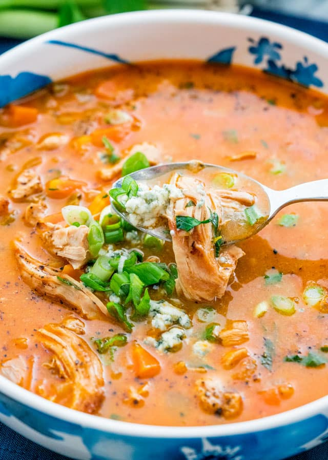

Buffalo Chicken Soup

The Perfect Soup for Football Season
This soup is one of my families all time favorites. It goes perfect with Football and cooler weather
This recipe makes almost 2 gallons so its perfect for a large gameday party or meal prep for the week
Ingredients
- 12 6oz chicken breasts
- 2 red bell peppers
- A full sleave of celery stalks
- 3-4 jumbo carrots
- 2 large white onions
- 1 cup white wine
- 3 quarts of heavy cream
- 2 quarts of half and half
- 2 tbsp garlic powder
- 2 tbsp onion powder
- 1 bottle of Franks Red Hot
- Salt and Pepper
Steps
- Season chicken breasts with whatever seasonings you would like. I like montreal chicken personally but you choose what you would like
- Sear chicken breast in a large soup pot with olive oil on medium heat
- While chicken is searing small dice peppers,onions,celery and carrots
- Once chicken breast is seared on both sides take out of pot
- Add veggies into the pot and cook until onions are slightly brown
- While veggies are cooking medium dice the seared off chicken breasts
- Add the diced chicken back into the pot with the veggies and stir to combine
- Deglaze pot with the white wine making sure to scrape the bottom of the pot
- Add heavy cream and half and half
- Add garlic and onion powder
- Stir soup and bring to a simmer
- Let simmer for about 5 minutes. The chicken should be cooked through by now
- Add Franks Red Hot to taste. You want the soup to be orange and taste like buffalo sauce but if you want more heat add more Franks. Be careful when adding because you can always add more if you need but you can't take any out once in
- Add salt and pepper to taste